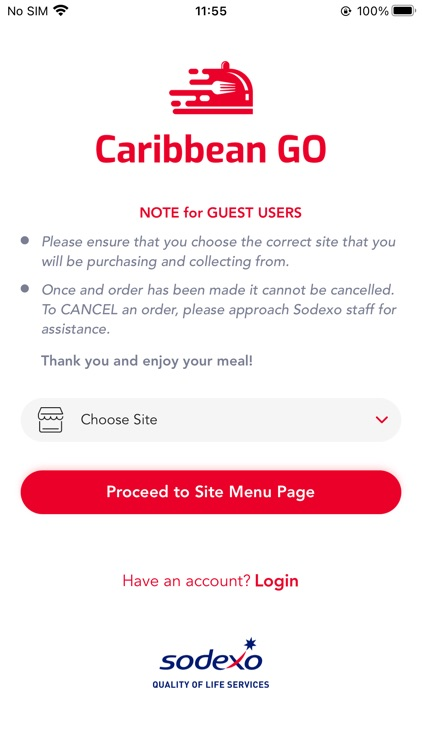

<div id="ajax-page" class="ajax-page-content">
  <div class="ajax-page-wrapper">
    <div class="ajax-page-nav">
      <div class="nav-item ajax-page-prev-next">
        <a class="ajax-page-load" href="src/portfolio-iSchool.html"
          ><i class="lnr lnr-chevron-left"></i
        ></a>
        <a class="ajax-page-load" href=""
          ><i class="lnr lnr-chevron-right"></i
        ></a>
      </div>
      <div class="nav-item ajax-page-close-button">
        <a id="ajax-page-close-button" href="#"
          ><i class="lnr lnr-cross"></i
        ></a>
      </div>
    </div>

    <div class="ajax-page-title">
      <h1>Sodexo</h1>
    </div>

    <div class="row">
      <div class="col-sm-8 col-md-8 portfolio-block">
        <div class="owl-carousel portfolio-page-carousel">
          <div class="item">
            
          </div>
          <div class="item">
            
          </div>
          <div class="item">
            
          </div>
        </div>
        <script type="text/javascript">
          jQuery(document).ready(function ($) {
            $(".portfolio-page-carousel").imagesLoaded(function () {
              $(".portfolio-page-carousel").owlCarousel({
                smartSpeed: 1200,
                items: 1,
                loop: true,
                dots: true,
                nav: true,
                navText: false,
                margin: 10,
                autoHeight: true,
              });
            });
          });
        </script>
      </div>

      <div class="col-sm-4 col-md-4 portfolio-block">
        <!-- Project Description -->
        <div class="project-description">
          <div class="block-title">
            <h3>Description</h3>
          </div>

          <p class="text-justify">
            SaaS platform for schools and corporate meals ordering with digital payment
            Progressive web app portal and mobile app for meal pre-ordering for up to 30 days
            Centralised library for menu management
            Family and account-based e-wallet
            Reward program for healthier meal choices.
            Nutrition information and Nutri-colour tagging to promote healthier consumption
            Allergen flagging for consumer’s food safety
            POS and Self-Service Kiosk for meal order and payment
            Sales volume, revenue and trends analytics dashboard
          </p>
          <!-- /Project Description -->

          <div class="tags-block">
            <div class="block-title">
              <h3>Responsibilities</h3>
            </div>
            <ul class="project-general-info">
              <li>
                <p><i class="fa fa-tasks"></i> Development</p>
                <p><i class="fa fa-tasks"></i> Analyze and propose technical solutions</p>
                <p><i class="fa fa-tasks"></i> Bug fixing</p>
                <p><i class="fa fa-tasks"></i> Code review and optimization</p>
                <p><i class="fa fa-tasks"></i> Shared knowledge and assisted junior teammates</p>
              </li>
            </ul>
          </div>
          <!-- /Responsibilities -->

          <!-- Technology -->
          <div class="tags-block">
            <div class="block-title">
              <h3>Technologies, Platform and tool used</h3>
            </div>
            <ul class="tags">
              <li><a>Java</a></li>
              <li><a>Spring Boot</a></li>
              <li><a>Mysql</a></li>
              <li><a>Beanstalk</a></li>
              <li><a>Cloudwatch</a></li>
              <li><a>RDS</a></li>
              <li><a>S3</a></li>
              <li><a>Git</a></li>
              <li><a>Jira</a></li>
            </ul>
          </div>

          <!-- /Technology -->
        </div>
        <!-- Project Description -->
      </div>
    </div>
  </div>
</div>
